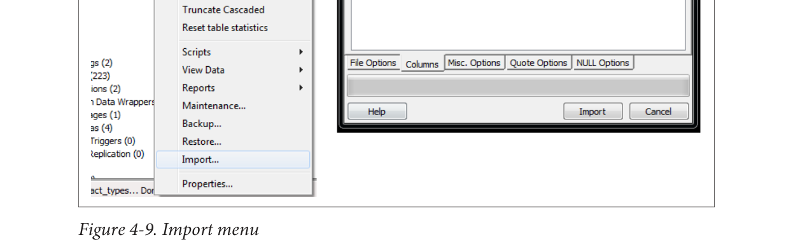

Xuất các truy vấn dưới dạng tệp có cấu trúc hoặc báo cáo
Ngoài việc nhập dữ liệu, bạn có thể xuất các truy vấn của mình sang định dạng phân cách, HTML hoặc XML. Để xuất với các dấu phân cách, thực hiện các bước sau:
- Mở cửa sổ truy vấn ().
- Viết truy vấn.
- Chạy truy vấn.
- Chọn Tệp→Xuất.
- Điền vào các cài đặt như được hiển thị trong Hình 4-10.
Tính năng pgAdmin|65